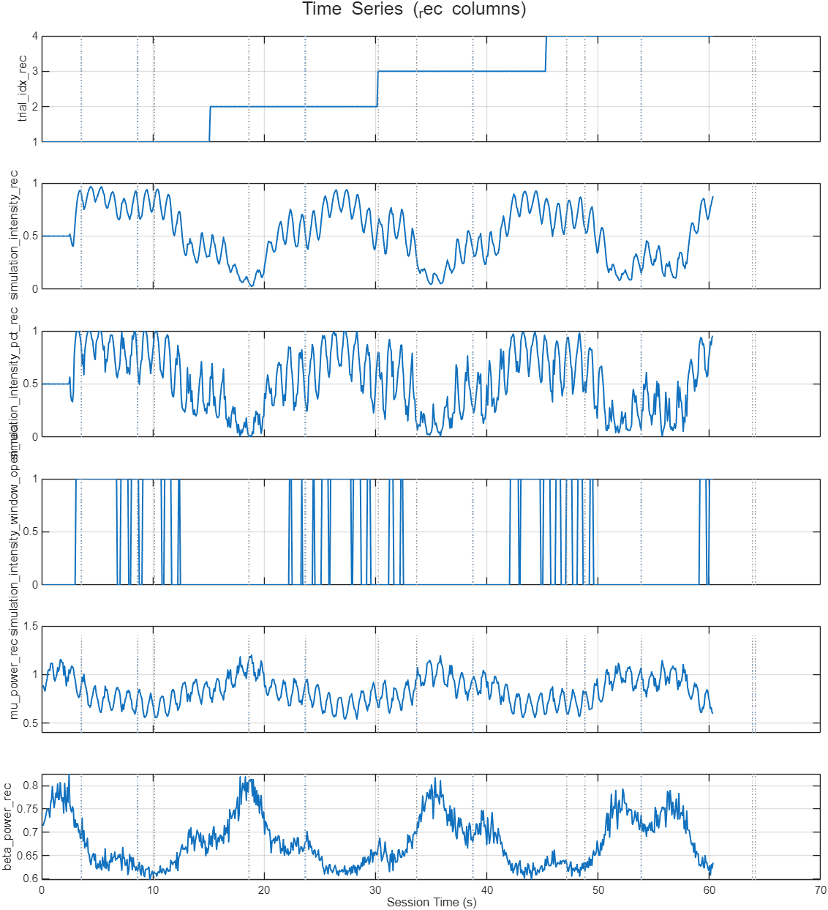
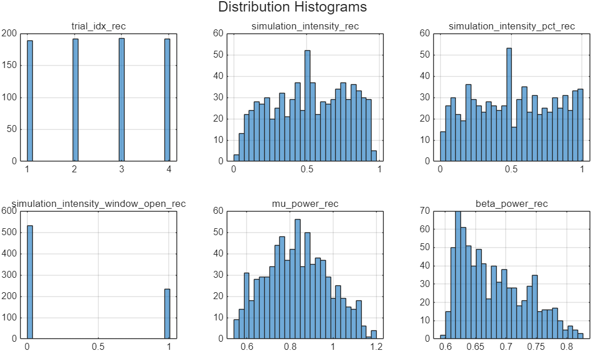
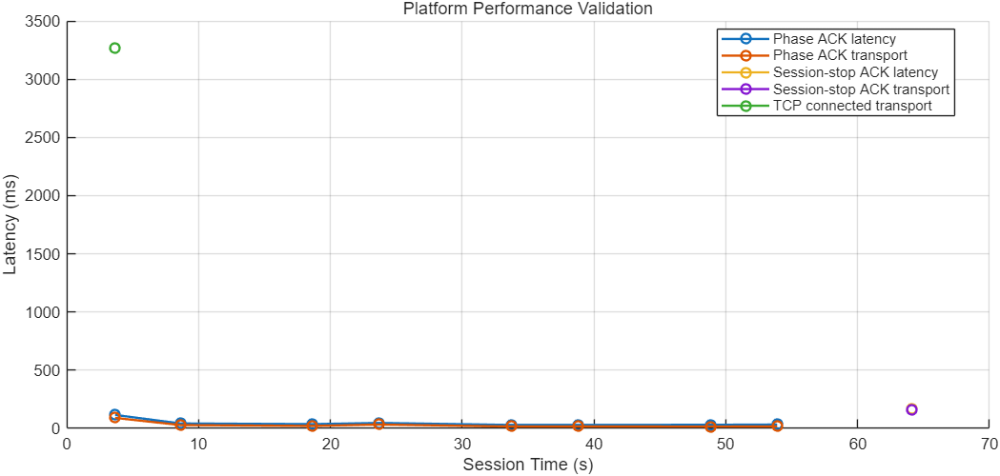

Metrics include phase and session_stop acknowledgment latency.
| section | key | N | mean | std | min | median | max |
|---|---|---|---|---|---|---|---|
| rec | trial_idx_rec | 763 | 2.5046 | 1.1170 | 1 | 3 | 4 |
| rec | simulation_intensity_rec | 763 | 0.5198 | 0.2547 | 0.0265 | 0.5153 | 0.9664 |
| rec | simulation_intensity_pct_rec | 763 | 0.5210 | 0.2866 | 0.0042 | 0.5039 | 1 |
| rec | simulation_intensity_window_open_rec | 763 | 0.3054 | 0.4609 | 0 | 0 | 1 |
| rec | mu_power_rec | 763 | 0.8345 | 0.1460 | 0.5427 | 0.8313 | 1.1989 |
| rec | beta_power_rec | 763 | 0.6804 | 0.0545 | 0.5974 | 0.6683 | 0.8254 |
| log | aim_start | 4 | |||||
| log | auto_fire | 3 | |||||
| log | enrolled | 1 | |||||
| log | menu_select_simulation | 1 | |||||
| log | phase_a_end | 4 | |||||
| log | phase_a_start | 4 | |||||
| log | phase_ack | 8 | |||||
| log | phase_ack_latency_ms | 8 | |||||
| log | phase_ack_transport_ms | 8 | |||||
| log | phase_b_end | 5 | |||||
| log | phase_b_start | 4 | |||||
| log | scene_loaded | 2 | |||||
| log | scene_unloaded | 1 | |||||
| log | session_start | 1 | |||||
| log | session_stop_ack | 1 | |||||
| log | session_stop_ack_latency_ms | 1 | |||||
| log | session_stop_ack_transport_ms | 1 | |||||
| log | state_above_threshold | 3 | |||||
| log | state_dropped | 4 | |||||
| log | tcp_connected | 1 | |||||
| log | tcp_connected_transport_ms | 1 | |||||
| log | trial_end | 8 | |||||
| log | trial_start | 8 | |||||
| perf | phase_ack_latency_ms | 8 | 45.7733 | 28.9755 | 29.8190 | 34.9715 | 115.8540 |
| perf | phase_ack_transport_ms | 8 | 30.0027 | 25.1005 | 16.3028 | 19.3726 | 90.1949 |
| perf | session_stop_ack_latency_ms | 1 | 167.6459 | 0 | 167.6459 | 167.6459 | 167.6459 |
| perf | session_stop_ack_transport_ms | 1 | 157.7137 | 0 | 157.7137 | 157.7137 | 157.7137 |
| perf | tcp_connected_transport_ms | 1 | 3269.4461 | 0 | 3269.4461 | 3269.4461 | 3269.4461 |
Full CSV: report/summary.csv
| metric | N | mean | std | min | median | max |
|---|---|---|---|---|---|---|
| phase_ack_latency_ms | 8 | 45.7733 | 28.9755 | 29.8190 | 34.9715 | 115.8540 |
| session_stop_ack_latency_ms | 1 | 167.6459 | 0 | 167.6459 | 167.6459 | 167.6459 |
| phase_ack_transport_ms | 8 | 30.0027 | 25.1005 | 16.3028 | 19.3726 | 90.1949 |
| session_stop_ack_transport_ms | 1 | 157.7137 | 0 | 157.7137 | 157.7137 | 157.7137 |
| tcp_connected_transport_ms | 1 | 3269.4461 | 0 | 3269.4461 | 3269.4461 | 3269.4461 |
| unity_sync_transport_ms | 9 | 44.1928 | 48.6160 | 16.3028 | 21.7140 | 157.7137 |
| unity_marker_transport_ms | 36 | 570.8296 | 1188.1929 | 16.0820 | 52.3614 | 3269.4461 |
Full CSV: performance_summary.csv
| t_session_sec | abs_ts | source | kind | key | value | info |
|---|---|---|---|---|---|---|
| 0.0287 | 1785919147.2744 | system | subject | enrolled | 0 | id=SMOKE_SIMULATION name= sex= age=0 handedness= note=dual-end smoke test |
| 3.5523 | 1785919150.7980 | matlab | phase | phase_a_start | 1 | dur=5s | send_seq=0 |
| 3.5834 | 1785919150.8291 | matlab | trial | trial_start | 1 | |
| 3.6555 | 1785919150.9012 | unity | marker | tcp_connected | 0 | scene=_Bootstrap | unity_ts=1785919147.631730 | recv_ts=1785919150.901176 | seq=0 | transport_ms=3269.446 | info=127.0.0.1:5555 |
| 3.6555 | 1785919150.9012 | system | latency | tcp_connected_transport_ms | 3269.4461 | scene=_Bootstrap seq=0 endpoint=127.0.0.1:5555 |
| 3.6597 | 1785919150.9054 | unity | marker | menu_select_simulation | 0 | scene=_Bootstrap | unity_ts=1785919147.723870 | recv_ts=1785919150.905364 | seq=1 | transport_ms=3181.494 | info=Game_Simulation3D |
| 3.6610 | 1785919150.9068 | unity | marker | scene_loaded | 0 | scene=_Bootstrap | unity_ts=1785919147.723870 | recv_ts=1785919150.906752 | seq=2 | transport_ms=3182.882 | info=MainMenu |
| 3.6622 | 1785919150.9079 | unity | marker | scene_unloaded | 0 | scene=_Bootstrap | unity_ts=1785919147.726870 | recv_ts=1785919150.907944 | seq=3 | transport_ms=3181.074 | info=MainMenu |
| 3.6642 | 1785919150.9099 | unity | marker | scene_loaded | 0 | scene=_Bootstrap | unity_ts=1785919147.750870 | recv_ts=1785919150.909909 | seq=4 | transport_ms=3159.039 | info=Game_Simulation3D |
| 3.6678 | 1785919150.9135 | unity | marker | session_start | 20 | scene=_Bootstrap | unity_ts=1785919147.750870 | recv_ts=1785919150.913528 | seq=5 | transport_ms=3162.658 | info=simulation |
| 3.6682 | 1785919150.9139 | unity | sync | phase_ack | 0 | scene=_Bootstrap | unity_ts=1785919150.823700 | recv_ts=1785919150.913895 | seq=6 | transport_ms=90.195 | info=A |
| 3.6682 | 1785919150.9139 | system | latency | phase_ack_transport_ms | 90.1949 | phase=A trial=1 ack_seq=6 unity_phase=A |
| 3.6682 | 1785919150.9139 | system | latency | phase_ack_latency_ms | 115.8540 | phase=A trial=1 send_seq=0 ack_seq=6 unity_phase=A |
| 8.5984 | 1785919155.8441 | matlab | phase | phase_a_end | 1 | |
| 8.6004 | 1785919155.8461 | matlab | phase | phase_b_start | 1 | dur=10s | send_seq=63 |
| 8.6384 | 1785919155.8841 | unity | trial | trial_start | 1 | scene=Game_Simulation3D | unity_ts=1785919155.859208 | recv_ts=1785919155.884131 | seq=7 | transport_ms=24.924 | info=simulation |
| 8.6410 | 1785919155.8867 | unity | marker | aim_start | 0.6500 | scene=Game_Simulation3D | unity_ts=1785919155.859208 | recv_ts=1785919155.886698 | seq=8 | transport_ms=27.490 | info=simulation |
| 8.6429 | 1785919155.8886 | unity | sync | phase_ack | 1 | scene=Game_Simulation3D | unity_ts=1785919155.860207 | recv_ts=1785919155.888639 | seq=9 | transport_ms=28.432 | info=B |
| 8.6429 | 1785919155.8886 | system | latency | phase_ack_transport_ms | 28.4317 | phase=B trial=1 ack_seq=9 unity_phase=B |
| 8.6429 | 1785919155.8886 | system | latency | phase_ack_latency_ms | 42.5220 | phase=B trial=1 send_seq=63 ack_seq=9 unity_phase=B |
| 10.1419 | 1785919157.3876 | unity | marker | state_above_threshold | 0.8465 | scene=Game_Simulation3D | unity_ts=1785919157.362276 | recv_ts=1785919157.387606 | seq=10 | transport_ms=25.330 | info=simulation |
| 10.1423 | 1785919157.3880 | unity | marker | auto_fire | 9 | scene=Game_Simulation3D | unity_ts=1785919157.363276 | recv_ts=1785919157.387958 | seq=11 | transport_ms=24.682 | info=simulation |
| 10.1425 | 1785919157.3882 | unity | trial | trial_end | 1 | scene=Game_Simulation3D | unity_ts=1785919157.363276 | recv_ts=1785919157.388229 | seq=12 | transport_ms=24.953 | info=simulation |
| 18.6125 | 1785919165.8582 | matlab | phase | phase_b_end | 1 | |
| 18.6130 | 1785919165.8587 | matlab | trial | trial_end | 1 | |
| 18.6137 | 1785919165.8594 | matlab | phase | phase_a_start | 2 | dur=5s | send_seq=191 |
| 18.6286 | 1785919165.8743 | matlab | trial | trial_start | 2 | |
| 18.6505 | 1785919165.8962 | unity | sync | phase_ack | 0 | scene=Game_Simulation3D | unity_ts=1785919165.874469 | recv_ts=1785919165.896183 | seq=13 | transport_ms=21.714 | info=A |
| 18.6505 | 1785919165.8962 | system | latency | phase_ack_transport_ms | 21.7140 | phase=A trial=2 ack_seq=13 unity_phase=A |
| 18.6505 | 1785919165.8962 | system | latency | phase_ack_latency_ms | 36.7689 | phase=A trial=2 send_seq=191 ack_seq=13 unity_phase=A |
| 23.6665 | 1785919170.9122 | matlab | phase | phase_a_end | 2 | |
| 23.6675 | 1785919170.9132 | matlab | phase | phase_b_start | 2 | dur=10s | send_seq=256 |
| 23.7136 | 1785919170.9593 | unity | trial | trial_start | 2 | scene=Game_Simulation3D | unity_ts=1785919170.927181 | recv_ts=1785919170.959330 | seq=14 | transport_ms=32.149 | info=simulation |
| 23.7141 | 1785919170.9598 | unity | marker | aim_start | 0.6500 | scene=Game_Simulation3D | unity_ts=1785919170.927181 | recv_ts=1785919170.959760 | seq=15 | transport_ms=32.578 | info=simulation |
| 23.7143 | 1785919170.9600 | unity | sync | phase_ack | 1 | scene=Game_Simulation3D | unity_ts=1785919170.927181 | recv_ts=1785919170.960047 | seq=16 | transport_ms=32.866 | info=B |
| 23.7143 | 1785919170.9600 | system | latency | phase_ack_transport_ms | 32.8655 | phase=B trial=2 ack_seq=16 unity_phase=B |
| 23.7143 | 1785919170.9600 | system | latency | phase_ack_latency_ms | 46.8061 | phase=B trial=2 send_seq=256 ack_seq=16 unity_phase=B |
| 26.1559 | 1785919173.4016 | unity | marker | state_dropped | 0.6472 | scene=Game_Simulation3D | unity_ts=1785919173.319031 | recv_ts=1785919173.401566 | seq=17 | transport_ms=82.535 | info=simulation |
| 27.1785 | 1785919174.4242 | unity | marker | state_dropped | 0.6424 | scene=Game_Simulation3D | unity_ts=1785919174.343417 | recv_ts=1785919174.424157 | seq=18 | transport_ms=80.739 | info=simulation |
| 28.1999 | 1785919175.4456 | unity | marker | state_dropped | 0.6433 | scene=Game_Simulation3D | unity_ts=1785919175.364975 | recv_ts=1785919175.445638 | seq=19 | transport_ms=80.663 | info=simulation |
| 30.2422 | 1785919177.4879 | unity | marker | state_above_threshold | 0.8249 | scene=Game_Simulation3D | unity_ts=1785919177.415039 | recv_ts=1785919177.487880 | seq=20 | transport_ms=72.841 | info=simulation |
| 30.2425 | 1785919177.4882 | unity | marker | auto_fire | 8 | scene=Game_Simulation3D | unity_ts=1785919177.415039 | recv_ts=1785919177.488238 | seq=21 | transport_ms=73.199 | info=simulation |
| 30.2428 | 1785919177.4885 | unity | trial | trial_end | 1 | scene=Game_Simulation3D | unity_ts=1785919177.415039 | recv_ts=1785919177.488526 | seq=22 | transport_ms=73.487 | info=simulation |
| 33.6843 | 1785919180.9300 | matlab | phase | phase_b_end | 2 | |
| 33.6847 | 1785919180.9305 | matlab | trial | trial_end | 2 | |
| 33.6873 | 1785919180.9330 | matlab | phase | phase_a_start | 3 | dur=5s | send_seq=384 |
| 33.7012 | 1785919180.9469 | matlab | trial | trial_start | 3 | |
| 33.7171 | 1785919180.9628 | unity | sync | phase_ack | 0 | scene=Game_Simulation3D | unity_ts=1785919180.946244 | recv_ts=1785919180.962818 | seq=23 | transport_ms=16.574 | info=A |
| 33.7171 | 1785919180.9628 | system | latency | phase_ack_transport_ms | 16.5744 | phase=A trial=3 ack_seq=23 unity_phase=A |
| 33.7171 | 1785919180.9628 | system | latency | phase_ack_latency_ms | 29.8190 | phase=A trial=3 send_seq=384 ack_seq=23 unity_phase=A |
| 38.7360 | 1785919185.9817 | matlab | phase | phase_a_end | 3 | |
| 38.7373 | 1785919185.9830 | matlab | phase | phase_b_start | 3 | dur=10s | send_seq=449 |
| 38.7666 | 1785919186.0123 | unity | trial | trial_start | 3 | scene=Game_Simulation3D | unity_ts=1785919185.996210 | recv_ts=1785919186.012292 | seq=24 | transport_ms=16.082 | info=simulation |
| 38.7670 | 1785919186.0127 | unity | marker | aim_start | 0.6500 | scene=Game_Simulation3D | unity_ts=1785919185.996210 | recv_ts=1785919186.012749 | seq=25 | transport_ms=16.539 | info=simulation |
| 38.7674 | 1785919186.0131 | unity | sync | phase_ack | 1 | scene=Game_Simulation3D | unity_ts=1785919185.996210 | recv_ts=1785919186.013117 | seq=26 | transport_ms=16.907 | info=B |
| 38.7674 | 1785919186.0131 | system | latency | phase_ack_transport_ms | 16.9070 | phase=B trial=3 ack_seq=26 unity_phase=B |
| 38.7674 | 1785919186.0131 | system | latency | phase_ack_latency_ms | 30.0767 | phase=B trial=3 send_seq=449 ack_seq=26 unity_phase=B |
| 45.1396 | 1785919192.3853 | unity | marker | state_dropped | 0.6497 | scene=Game_Simulation3D | unity_ts=1785919192.307638 | recv_ts=1785919192.385312 | seq=27 | transport_ms=77.674 | info=simulation |
| 47.1786 | 1785919194.4243 | unity | marker | state_above_threshold | 0.8754 | scene=Game_Simulation3D | unity_ts=1785919194.352407 | recv_ts=1785919194.424264 | seq=28 | transport_ms=71.857 | info=simulation |
| 47.1789 | 1785919194.4246 | unity | marker | auto_fire | 7 | scene=Game_Simulation3D | unity_ts=1785919194.352407 | recv_ts=1785919194.424605 | seq=29 | transport_ms=72.198 | info=simulation |
| 47.1792 | 1785919194.4249 | unity | trial | trial_end | 1 | scene=Game_Simulation3D | unity_ts=1785919194.352407 | recv_ts=1785919194.424869 | seq=30 | transport_ms=72.462 | info=simulation |
| 48.8115 | 1785919196.0572 | matlab | phase | phase_b_end | 3 | |
| 48.8121 | 1785919196.0578 | matlab | trial | trial_end | 3 | |
| 48.8127 | 1785919196.0584 | matlab | phase | phase_a_start | 4 | dur=5s | send_seq=578 |
| 48.8274 | 1785919196.0731 | matlab | trial | trial_start | 4 | |
| 48.8439 | 1785919196.0896 | unity | sync | phase_ack | 0 | scene=Game_Simulation3D | unity_ts=1785919196.073306 | recv_ts=1785919196.089609 | seq=31 | transport_ms=16.303 | info=A |
| 48.8439 | 1785919196.0896 | system | latency | phase_ack_transport_ms | 16.3028 | phase=A trial=4 ack_seq=31 unity_phase=A |
| 48.8439 | 1785919196.0896 | system | latency | phase_ack_latency_ms | 31.1658 | phase=A trial=4 send_seq=578 ack_seq=31 unity_phase=A |
| 53.8606 | 1785919201.1063 | matlab | phase | phase_a_end | 4 | |
| 53.8609 | 1785919201.1067 | matlab | phase | phase_b_start | 4 | dur=10s | send_seq=643 |
| 53.8935 | 1785919201.1392 | unity | trial | trial_start | 4 | scene=Game_Simulation3D | unity_ts=1785919201.122793 | recv_ts=1785919201.139205 | seq=32 | transport_ms=16.412 | info=simulation |
| 53.8938 | 1785919201.1395 | unity | marker | aim_start | 0.6500 | scene=Game_Simulation3D | unity_ts=1785919201.122793 | recv_ts=1785919201.139536 | seq=33 | transport_ms=16.743 | info=simulation |
| 53.8941 | 1785919201.1398 | unity | sync | phase_ack | 1 | scene=Game_Simulation3D | unity_ts=1785919201.122793 | recv_ts=1785919201.139824 | seq=34 | transport_ms=17.031 | info=B |
| 53.8941 | 1785919201.1398 | system | latency | phase_ack_transport_ms | 17.0312 | phase=B trial=4 ack_seq=34 unity_phase=B |
| 53.8941 | 1785919201.1398 | system | latency | phase_ack_latency_ms | 33.1740 | phase=B trial=4 send_seq=643 ack_seq=34 unity_phase=B |
| 63.8764 | 1785919211.1221 | matlab | phase | phase_b_end | 4 | |
| 63.8769 | 1785919211.1227 | matlab | trial | trial_end | 4 | |
| 64.1142 | 1785919211.3600 | unity | sync | session_stop_ack | 0 | unity_ts=1785919211.202241 | recv_ts=1785919211.359955 | seq=35 | info=finalize |
| 64.1142 | 1785919211.3600 | system | latency | session_stop_ack_transport_ms | 157.7137 | ack_seq=35 reason=finalize |
| 64.1142 | 1785919211.3600 | system | latency | session_stop_ack_latency_ms | 167.6459 | send_seq=772 ack_seq=35 reason=finalize |
| 64.1253 | 1785919211.3710 | matlab | phase | phase_b_end | 4 | session_finalize |
| 64.1256 | 1785919211.3713 | matlab | trial | trial_end | 4 | session_finalize |
Full event log: events_log.csv